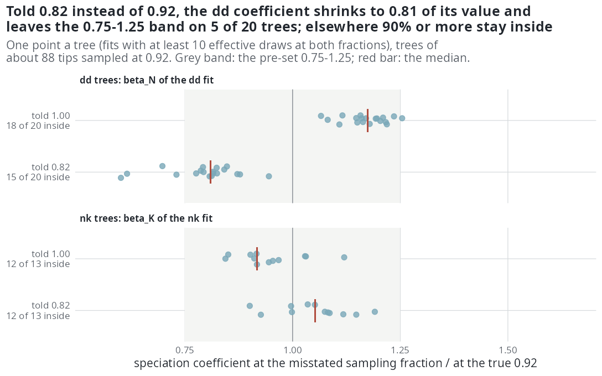

E35 — an extinction driver where the tree holds more extinction; a misstated sampling fraction
| Status | (a) complete and holds; (b) complete: all three fractions written (rho100 last, 2026-10-14 19:23) and read by sim/E35b-analysis.R, the reading below computed directly from the three ladder.csv files; (b) holds with one caveat: its nd rung maximised the likelihood before emphasis 4e0b9dd and nothing replaces it; the misstated-\(\rho\) question enters E47's design |
| Package build | (a) emphasis f30a791; (b) emphasis f30a791 (results/E35/LAUNCH.md, 2026-10-10) |
| Driver / analysis | sim/E27-conditions.R (--cells t25big --gens nk --gamma-eff ... for (a); --fit-rho for (b)); sim/E35b-analysis.R for (b); no analysis script for (a) |
| Data | (a) results/E35/{k-neg,k-zero,k-pos}/ladder.csv (60 rows each), calibration.csv, logs; (b) results/E35/{rho082,rho092,rho100}/ladder.csv (200 rows each), logs |
Question
(a) E32 found the one extinction signal of the study on the nk generator: a negative slope on K returned in sign at a third of its size on trees at turnover 0.10, where E34 (a) shows an exact likelihood sees no extinction at all. E35 (a) repeats the K arms where the trees hold more extinction, at turnover 0.25.
(b) \(\rho\) is a known input of every fit, and the families of the biology paper are fitted at their own \(\rho\) (median 0.92). E35 (b) asks what a user pays for getting it wrong by 0.1.
Design
(a) A K driver at turnover 0.25 (new cell t25big):
| setting | value |
|---|---|
| generator | nk, speciation slope on K \(-\log 0.65\) per SD of K = +0.124 per split |
| extinction slope on K | \(-\log 1.5\), 0, \(+\log 1.5\) per SD of K = -0.1165, 0, +0.1165 per split |
| extinction intercept | centred so a lineage at the mean K has the cell's rate, 0.125 (turnover 0.25) |
| capacity | calibrated per arm: 65 (-), 79 (0), 99 (+) |
| tips / crown / \(\rho\) | 200 / 15 / 1 |
| trees | 20 an arm |
| ladder | cr, dd, nk; 300 draws, max_iter 300, 16-hour clock; unconditional likelihood |
(b) A misstated sampling fraction:
| setting | value |
|---|---|
| cell | E27's fam: 88 tips target, turnover 0.10 (\(\mu\) = 0.05), true \(\rho\) = 0.92, crown 15 |
| generators | dd (capacity 158; \(\beta_N = -0.0146\)) and nk (capacity 56; \(\beta_K = +0.164\) per split), 20 trees each by E27's seeds; median 95.5 and 81 tips |
| fits | each tree through the full ladder (cr, dd, nd, ned, nk) three times, told \(\rho\) = 0.82, 0.92, 1.00 |
| budget | 300 draws, max_iter 300, a four-hour clock, the same for the three fits of a tree |
| reading | within 2 AIC (fewest parameters within 2 of the minimum), paired by tree |
Pre-set rule
(a) E32's rule (2) on the K slope — recovered if in both signed arms median fitted/generating in [0.75, 1.25], right sign on ≥ 80% and fewer than half on a limit; detected in sign only if right sign on ≥ 80% in both and the + and - interquartile ranges disjoint; not identified otherwise — and rule (3): an arm with fewer than 10 effective draws on more than half its fits is sampler-limited and left out. Read beside E32's numbers at turnover 0.10.
(b)
- Selection robust if the chosen model at a misstated \(\rho\) equals the one at \(\rho\) = 0.92 on ≥ 90% of trees, per generator and misstatement.
- Estimation robust if the speciation coefficient at a misstated \(\rho\) is within 0.75 to 1.25 of its value at 0.92 on ≥ 80% of the trees where the fit keeps 10 effective draws (\(\beta_N\) on
ddtrees, \(\beta_K\) onnktrees). - The direction of change is reported: a \(\rho\) told too low adds hidden lineages, which should raise the fitted extinction rate and lower \(\beta_N\).
- A cell with fewer than 10 effective draws on more than half its fits is sampler-limited and reported, not read.
Results
(a) K driver at turnover 0.25
Computed from the three ladder.csv (no merged table exists); the values match the supplement and the README.
| arm | generating \(\gamma\)_K | fitted \(\gamma\)_K, median (quartiles) | fitted/gen | right sign | on a limit | ESS median (< 10) | finished | nk chosen |
\(\beta_K\) ratio | median tips |
|---|---|---|---|---|---|---|---|---|---|---|
| K - | -0.1165 | -0.087 (-0.166, -0.018) | 0.75 | 18 of 20 | 5 | 30.5 (4) | 5 | 20 | 0.88 | 186 |
| K 0 | 0 | +0.004 (-0.023, +0.028) | — | — | 0 | 13.8 (4) | 0 | 18 | 1.01 | 223 |
| K + | +0.1165 | +0.027 (-0.003, +0.062) | 0.23 | 15 of 20 | 1 | 7.4 (12) | 0 | 9 | 0.75 | 196.5 |
"On a limit" for the negative arm is the supplement's 5; counting within 1% of 0.28 (E32's limit for this slope) gives 4, and 5 at |\(\gamma\)_K| ≥ 0.26. The t25big box limit is not written in the ladder rows. The fitted intercept (median rate about 0.0016 in every arm) is the rate at K = 0, not at the mean K, and the design does not read it. At turnover 0.10 (E32) the negative slope returned at 0.36 of its size.
The right-hand panel of the drivers figure on E32 draws these three arms: the negative and zero arms sit on the identity line within their spread, and the positive arm sits low with 12 of its 20 fits marked as below 10 effective draws.
(b) A misstated sampling fraction
All 600 fits returned (40 trees x 5 models x 3 fractions, no errors). Generator fit, median effective draws (fits below 10): dd 216 / 258 / 254 (0 / 0 / 0) and nk 14.7 / 37.6 / 29.0 (4 / 4 / 5) at \(\rho\) told 0.82 / 0.92 / 1.00, so no cell is sampler-limited. Fits that met the stopping rule: dd 15 / 16 / 17 of 20, nk 3 / 4 / 2. Median ladder time 8.2 / 5.9 / 4.6 hours.
Selection (chosen model the same as at 0.92):
| generator | told 0.82 | told 1.00 | rule (≥ 90%) |
|---|---|---|---|
dd |
19 of 20 | 19 of 20 | robust |
nk |
20 of 20 | 18 of 20 | robust (18 of 20 = 90%) |
At 0.92 the dd trees choose dd on 17, cr on 2, nd on 1; the nk trees choose nk on 13, dd on 4, cr, nd and ned on 1 each.
Estimation (speciation coefficient at the misstated \(\rho\) over its value at 0.92, on trees whose generator fit keeps ≥ 10 effective draws at both fractions):
| generator, coefficient | told 0.82: inside [0.75, 1.25]; median ratio (quartiles) | told 1.00 | rule (≥ 80%) |
|---|---|---|---|
dd, \(\beta_N\) |
15 of 20 (75%); 0.81 (0.77, 0.83) | 18 of 20; 1.18 (1.15, 1.21) | not robust at 0.82; robust at 1.00 |
nk, \(\beta_K\) |
12 of 13; 1.05 (1.00, 1.09) | 12 of 13; 0.92 (0.90, 0.97) | robust at both |
Requiring 10 draws only at the misstated fraction gives 15 of 16 and 14 of 15 for nk; the dd counts do not change.
Direction. On dd trees the magnitude of \(\beta_N\) follows the fraction told: at 0.82 it is smaller than at 0.92 on all 20 trees (median -0.0118 against -0.0147; generating -0.0146), at 1.00 larger on all 20 (-0.0173). The extinction side does not register the change: the cr fit's extinction rate is a median 0.0013 at all three fractions (generating 0.05), higher at 0.82 than at 0.92 on 8 of 20 dd trees and 4 of 20 nk trees; the dd fit's rate at present diversity is 0.032 / 0.029 / 0.029. The speciation rate of the cr fit falls as the fraction told rises (dd trees 0.185 / 0.174 / 0.166).

dd tree's \(\beta_N\) shrinks and five leave the pre-set band; told 1.00 it grows on every tree but stays inside on 18. The nk coefficient moves about 5-8% either way.Conclusion
(a) By the rule the K slope is not identified: the positive arm is sampler-limited (12 of 20 fits below 10 draws) and rule (2) needs both signed arms. On the two arms the rule can read, the negative slope returns at 0.75 of its value with the right sign on 18 of 20, and the zero slope at +0.004, against 0.36 at turnover 0.10 in E32. This is the first extinction slope in the study returned near its size in one direction; the supplement calls it "the first extinction slope recovered in the study", which is stronger than the rule allows. At 200 tips and turnover 0.25 the exact constant-rate profile detects extinction on 20% of trees (E38).
(b) Selection is robust to a fraction off by 0.1 in either direction for both generators. Estimation is robust for nk, and for dd when told 1.00, but not when told 0.82: \(\beta_N\) shrinks by a median 19% and 5 of 20 trees leave the band. The direction is the one the design predicted for \(\beta_N\) only in the sense that its magnitude falls when \(\rho\) is told too low; the extinction rate does not rise, because at turnover 0.10 and 88 tips it sits at about 0.0013 whatever the fraction (the region where E38 finds no information on extinction). These numbers are computed directly from the three ladders; the README's E35 row carries the same counts, read by sim/E35b-analysis.R from the same files.
Caveat on (b): its nd rung maximised the earlier D likelihood. Emphasis 4e0b9dd changed the D likelihood; before it the likelihood held the clade mean pendant age at its segment-end value, so \(D\) grew within a segment while the simulator held it constant; from it \(D\) is constant between events in both. On complete trees E44 measured d's \(\beta_D\) at 0.70 and 1.46 of its value under the earlier likelihood and 0.95 and 1.16 under the current one (nd at -0.35: 0.77 and 1.01). No experiment refits that rung, and the question of a misstated \(\rho\) enters E47's design (Estimability).